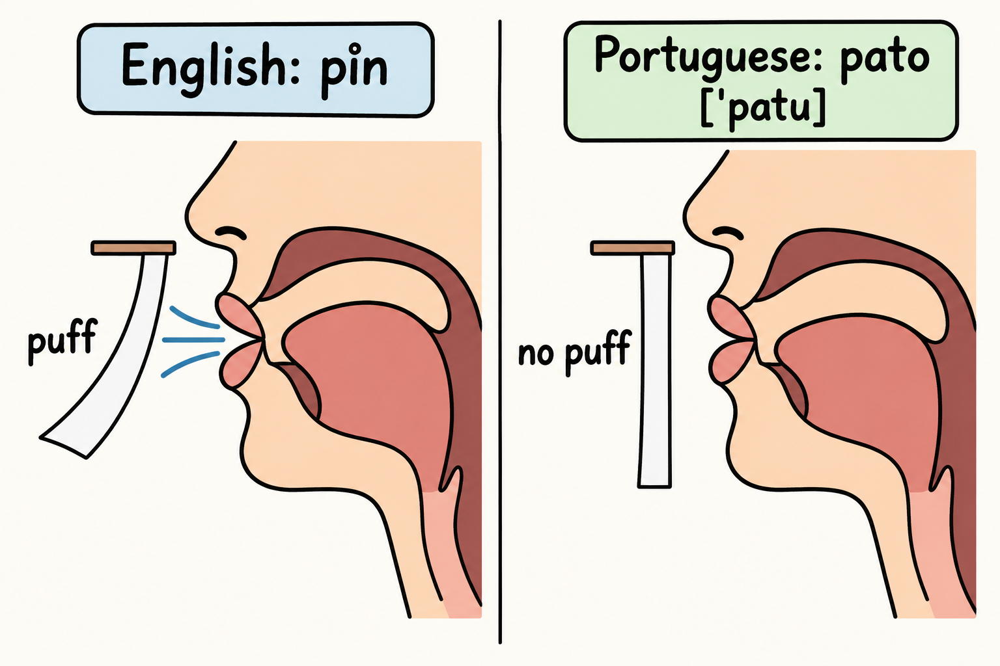
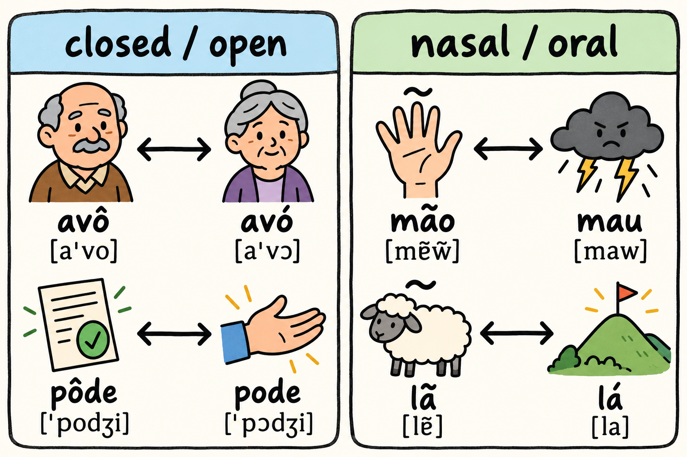

Your English has trained your ear for the wrong differences. In English, a puff of air after p, t and k matters, and the gap between the vowel of "bed" and the vowel of "bad" matters. In Brazilian Portuguese those particular differences do very little work, while other differences, the ones your ear barely reports, decide which word you have just heard. This chapter is about three of those quiet contrasts.
The first is aspiration, the puff of air that follows p, t and k in English and that Brazilian Portuguese mostly does not use. The second is the mid vowels, the open and closed versions of e and of o, which English does not mark as separate sounds. The third is nasality, the nasal vowels and nasal diphthongs that carry some of the most frequent words in the language.
All three of these contrasts belong in the "changes meaning" column of the hierarchy you met in Chapter 1. Getting one of them wrong can turn one word into another in the ear of your listener, so all three belong at the top of your pronunciation work. The order inside this chapter is deliberate. You train perception first and production second, because that is the order the research supports.
A meta-analysis of high variability phonetic training, the technique that has you hear one contrast repeated in several different voices, reports gains in perception [F34]. A separate meta-analysis asks whether that same training improves production, and the answer is that the production gain is smaller and is retained less well [F33]. Listening practice is the part that pays reliably. Speaking practice is the part you will have to repeat.
This book gives you transcription and respelling only. There are no audio files and no QR codes here. The several voices have to come from real Brazilian speakers, in whatever recordings you choose to use. What the book gives you in this chapter is the map of what to listen for, plus controlled production work once the ear has started to notice the contrasts.

From this chapter onward, the book also uses broad IPA in square brackets, in Chapters 3 and 4 and in the minimal-pairs list of the appendix. Other chapters use respelling only. Both systems appear here, and neither replaces the other: the respelling is what you say to yourself, the IPA is what a phonetician would write.
| Written form | Sounds roughly like | Illustration |
|---|---|---|
| a (stressed) | "ah" in father | pato = PAH-too |
| a closed o, often written with the circumflex | "oh" in note, said pure and without glide | avô = ah-VOH |
| an open o, often written with the acute accent | "aw" in law, said short and without glide | avó = ah-VAW |
| a closed e | "ay" in grey, said without glide | sede (thirst) = SAY-djee |
| an open e | "eh" in bet | sede (headquarters) = SEH-djee |
| final -o | "oo" in food | tudo = TOO-doo |
| final -e | "ee" in see in most of Brazil | pode = PAW-djee |
| a vowel followed by m or n, or written with ã or õ | the vowel said through the nose | mão = mowng, roughly |
Two notes on the key. In most of Brazil, d before that final "ee" sounds like the "j" in "job", which is why the respellings above show -djee. And the two things that most need your attention in this chapter are that a closed vowel stays pure and that a nasal vowel really is said through the nose. All respelling forms in this chapter are the author's illustrations, not confirmed dictionary pronunciations.

Say "pin" and "spin" out loud in English and listen to the p. In "pin" there is a small burst of air right after the p. In "spin" there is not. English p, t and k come with that puff at the start of a stressed syllable. Brazilian Portuguese p, t and k mostly do not. When an English speaker hears a Portuguese p, they may hear a b, because the English ear decodes "no puff" as "voiced".
The technical measure is voice onset time, the gap between the moment the stop is released and the moment voicing begins. In a study that measured these stops, voice onset time was about 55 ms for p, about 70 ms for t and about 80 ms for k in English, against about 12 ms, about 18 ms and about 38 ms in Brazilian Portuguese [F24]. A stop with zero or negative voice onset time is identified as voiced by an English speaker [F24], and that is exactly the trap, because the Brazilian Portuguese stops sit so far down that scale. One caution about that study matters here: it follows Brazilians learning English, which is the reverse direction from you, so applying those figures to Portuguese word pairs is an inference rather than a result measured on English speakers learning Portuguese [F24]. The structural point is on firmer ground: English and Brazilian Portuguese use voice onset time in different ways [F26].
This is a meaning contrast, because p versus b, t versus d and k versus g are real word pairs. Here are the author's illustrations:
Read them with the respelling as well: PAH-too versus BAH-too, TOM versus DOM roughly, KOH-lah versus GOH-lah in the author's spelling.
Now the label. The p versus b, t versus d and k versus g contrast is marked "changes meaning". The puff you add on top of a Portuguese p, t or k is marked "accent only": it does not create another word, but it announces your English immediately. Both are worth fixing, and the meaning contrast comes first.
Two author's suggestions, neither of them sourced and neither carrying any figure. First, the paper test: hold a thin sheet of paper in front of your mouth and say the Portuguese word. If the paper moves a lot, you are probably still puffing. Second, the spin and stop bridge: your English already gives you unaspirated p, t and k in "spin", "stop" and "stock". Use the feel of the p in "spin" as your model for the Portuguese p at the start of a word, the t of "stop" for the Portuguese t, and the k of "stock" for the Portuguese k.
English has, for practical purposes, one e-like vowel and one o-like vowel in this part of the mouth, and both of them glide: the "ay" of "day" moves, and the "oh" of "go" moves. Brazilian Portuguese has two of each, and they stay still.
The pairs are closed e [e] against open e [ɛ], and closed o [o] against open o [ɔ]. The circumflex usually marks the closed vowel and the acute accent usually marks the open one, but plenty of everyday words carry the contrast with no accent mark at all, which is why the ear has to learn it.
Speakers of American English have difficulty both hearing and producing these mid vowels, and learners tend to overcorrect [F18]. That last point deserves a warning sign. Once you know the contrast exists, you may start opening vowels that should stay closed and closing vowels that should open. So when you practise, work with pairs rather than with isolated words, and let the pair tell you which vowel is which.
Here are the author's illustrations again:
Say them with the respelling: ah-VOH against ah-VAW, POH-djee against PAW-djee, SAY-djee against SEH-djee. The spelling of the second pair differs by the accent mark only, and the spelling of the third pair does not differ at all, so the whole contrast lives in your mouth and your ear. That is why this one is marked "changes meaning": in these pairs the vowel is the only thing carrying the difference between two words.
A useful habit while you listen: forget the English glide. A Portuguese closed o is not the "oh" of "go", it is a steady vowel with no movement at the end. The same holds for the closed e, which is not the moving vowel of "day". Pure and still, and the two qualities separate.
Brazilian Portuguese has five nasal vowels in the description this chapter relies on, and that description rests on a single speaker [F21]. Treat it as a description to learn from rather than a map of every Brazilian mouth. On top of the nasal vowels sit nasal diphthongs, the kind you meet in não and mão, where the glide is nasal too.
The illustrations below are the author's own:
In the respelling: mowng roughly against MAH-oo, and lowng roughly against lah. The m and n letters after a vowel are not full consonants for you to pronounce; they are the spelling's way of telling you that the vowel is nasal. That is a common place where an English speaker adds a consonant that Portuguese does not want. This is the author's observation, not a sourced claim.
Nasality also matters to how you sound. In a study of nasal vowel production, the type of nasal vowel the learner produced weighed more on the accent judgment of English speakers than whether the learner had heard a native model beforehand [F23]. Two things follow for you. Choosing the right nasal quality is part of what listeners judge, and hearing a model once is not a substitute for getting the vowel type right.
This contrast is marked "changes meaning" as well: mão and mau are different words, and lã and lá are different words, and the vowel alone decides which one you said. As the author's suggestion, with no figure and no source claim, start your training with the nasal shapes "ão" and "em", and only then move to the nasal vowels inside words.
Here is how these three contrasts fit together in practice, as the author's suggestion rather than a sourced program. Work with minimal pairs in several voices before you try to say anything yourself, since that is where the reliable gain is [F34] and production gains come later and hold less well [F33]. Use the paper test and the spin and stop bridge to get the stops right. Keep the mid vowels pure and still, working in pairs so that overcorrection has nowhere to grow. Then start your nasal work with "ão" and "em".
If your English is British, Australian, New Zealand or South African English, you are non-rhotic: the r after a vowel is not a full consonant in your accent. Two practical notes follow for this chapter.
First, the aspiration bridge. American speakers have a flap bridge available to them, the tapped t and d of "better" and "ladder", and Chapter 4 explains how it is used. As a non-rhotic speaker you do not have that bridge, so build the aspiration connection another way. The s-cluster words work in your English exactly as they work in every other variety: "spin", "stop" and "stock" give you p, t and k with no puff, and those are your models for the Portuguese stops. Add the paper test on top of that, and the bridge stands without any flap.
Second, the vowels. As the author's suggestion, your "law" vowel may be a useful anchor for the open o of Portuguese [ɔ]. Your "go" and "day" vowels both glide, so when you produce the Portuguese closed o [o] and closed e [e], strip the movement out and keep the vowel still. Australian speakers should check the same two vowels, which tend to glide at least as much. In both varieties, the English schwa has no home in these Portuguese vowels: avoid letting a reduced, neutral vowel creep in where Portuguese keeps its vowels distinct.
The non-rhotic r itself is treated in Chapter 4. This box only covers the bridges you need for aspiration and the mid vowels.
Spanish changes this chapter in a specific way: it gives you a smaller vowel inventory than Portuguese, and it gives you soft consonants where Portuguese wants hard ones. Three traps are relevant here. The first two are the author's observations, not sourced claims.
Also worth keeping in view: English-Spanish bilinguals depend on Spanish when learning Portuguese, whatever the order in which they acquired their languages [F62]. That dependence is not a defect. It is the material you manage, and Chapter 8 is built around it. On the sound side, English-Spanish bilinguals produce voiced stops as Spanish-style approximants [F36], so b, d and g come out soft and continuous instead of closed.
A practice suggestion for this chapter: the full-stop drill. In Portuguese, produce b, d and g as real stops, with a complete closure and a clean release, especially between vowels. Say these author's illustrations slowly and keep the consonant hard rather than soft:
Put each word into a short phrase of your own, then say it again at conversational speed without letting the consonant soften.
If you keep one idea from this chapter, keep the order: hear it first, say it second. The three contrasts here all change meaning, so they outrank the accent-only features that Chapter 4 collects. Use minimal pairs in several voices, keep the mid vowels pure and still, stop puffing your p, t and k, and put your nasality into the vowel itself.
Retrieving what you just read is what makes it stick: a meta-analysis of the testing effect compares testing with restudy [F94]. Answer from memory first, then check.
As the author's suggestion, here is a simple calendar for this chapter. Read it once today, then come back on these days:
On each return, run the self-test from memory before you reread anything, then reread only the parts you missed. These review points are the author's adaptation of the interval idea in a spacing study [F90], which measured a single gap between two study sessions. That source did not test this calendar, and the points above are a suggestion, not a result reported by that study. Adjust the timing to your own week if you need to; the habit of returning and retrieving matters more than the exact day.